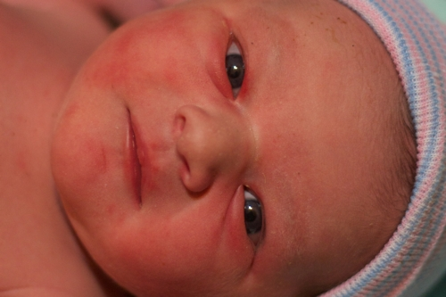
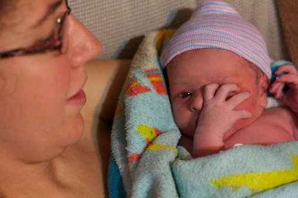
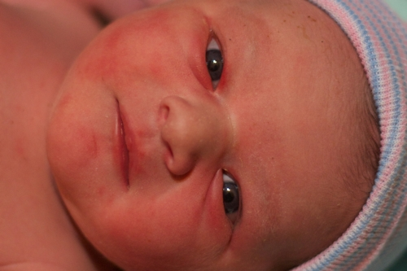
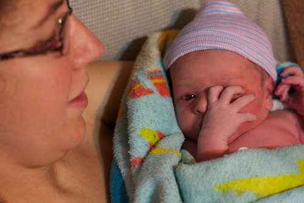
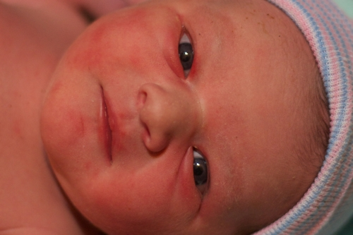
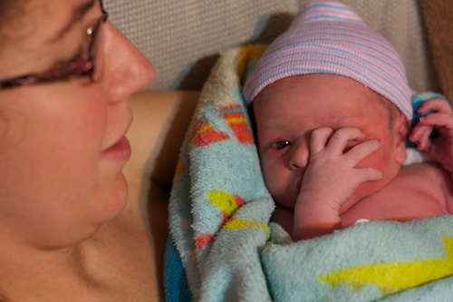
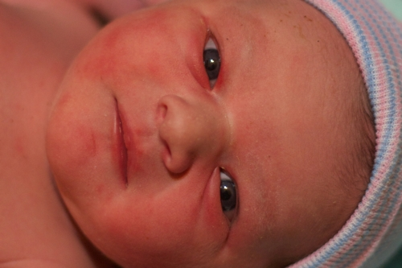
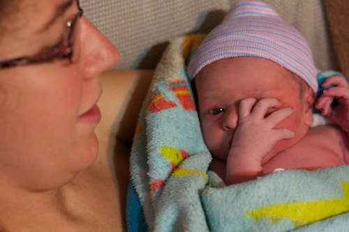

Rhythm Noel Visher was born a healthy baby girl on 10/4/2013. She was delivered by her Abba (Daddy), an experience he won't soon forget, and is doing splendidly.
If you want all the details, read the full birth story.